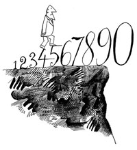

|

"Untitled" (1962)
Saul Steinberg
|
Roger Koenker
Office:
Department of Economics
University of Illinois
Champaign, IL, 61820
Phone: (217) 333-4558
Fax: (217) 244-6678
E-mail:
rkoenker@uiuc.edu
CV: PDF
UIUC: Econ | Stat
|
Courses
Research
Causes
|